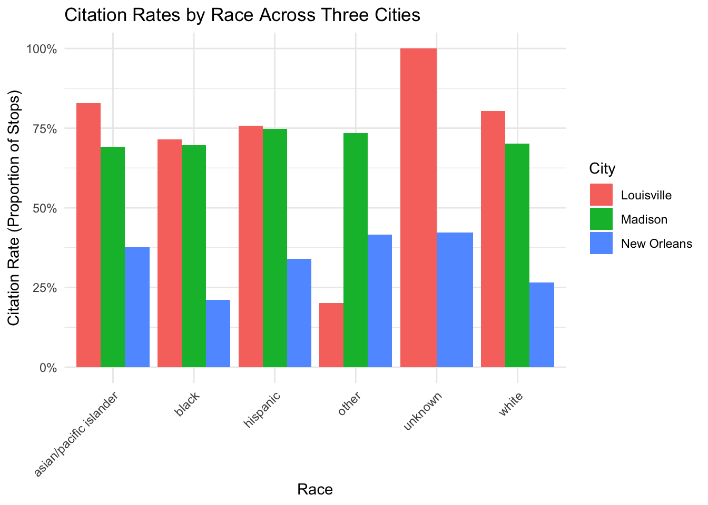

This project analyzes traffic-stop data from three agencies in the Stanford Open Policing Project (Pierson et al. 2020): New Orleans Police Department (LA), Madison Police Department (WI), and Louisville Metro Police Department (KY). All data wrangling is done in SQL. R is used only to summarize the SQL output and produce figures.
I focus on two questions:
How do citation and warning rates vary across race within each city?
How do these patterns differ across jurisdictions?
Because the three agencies store outcomes differently, the key step is to harmonize the outcome definitions (especially for New Orleans) and then stack the agencies into one consistent dataset that can be grouped and compared.
Before building the combined dataset, I confirm table names available in the database. I also extract the state prefix from each table name using SUBSTRING_INDEX, which makes it easier to locate relevant datasets quickly.
From this list, I focus on three city-level datasets: la_new_orleans_2020_04_01, wi_madison_2023_01_26, and ky_louisville_2023_01_26.
Building a three-city dataset in SQL
The block below creates one unified dataset by stacking the three city tables using UNION ALL and adding a city label. New Orleans stores outcome as text, so I use CASE WHEN to create comparable binary indicators for citation_issued and warning_issued. Madison and Louisville already contain numeric flags with those names, so I select them directly. I filter to rows with non-missing subject_race because race is essential for the comparisons that follow.
Code
SELECT*FROM (-- New Orleans: recode text outcome into harmonized binary indicatorsSELECT'New Orleans'AS city, subject_race, subject_sex,date,time,CASEWHEN outcome ='citation'THEN1ELSE0ENDAS citation_issued,CASEWHEN outcome ='warning'THEN1ELSE0ENDAS warning_issuedFROM la_new_orleans_2020_04_01WHERE subject_race ISNOTNULLUNIONALL-- Madison: indicators already provided as numeric flagsSELECT'Madison'AS city, subject_race, subject_sex,date,time, citation_issued, warning_issuedFROM wi_madison_2023_01_26WHERE subject_race ISNOTNULLUNIONALL-- Louisville: indicators already provided as numeric flagsSELECT'Louisville'AS city, subject_race, subject_sex,date,time, citation_issued, warning_issuedFROM ky_louisville_2023_01_26WHERE subject_race ISNOTNULL) AS t;
Descriptive summaries
To compare outcomes across race and city, I compute (1) the number of stops and (2) the fraction of stops resulting in citations and warnings. Since citation_issued and warning_issued are 0/1 indicators, their means are directly interpretable as rates.
# A tibble: 17 × 5
city subject_race stops citation_rate warning_rate
<chr> <chr> <int> <dbl> <dbl>
1 Louisville asian/pacific islander 1621 0.829 0.171
2 Louisville black 45947 0.715 0.285
3 Louisville hispanic 6656 0.757 0.243
4 Louisville other 781 0.201 0.799
5 Louisville unknown 2 1 0
6 Louisville white 91470 0.804 0.196
7 Madison asian/pacific islander 14957 0.692 0.308
8 Madison black 68638 0.696 0.304
9 Madison hispanic 28344 0.748 0.252
10 Madison other 1868 0.735 0.265
11 Madison white 213925 0.701 0.299
12 New Orleans asian/pacific islander 3793 0.376 0.288
13 New Orleans black 349819 0.211 0.239
14 New Orleans hispanic 13491 0.340 0.222
15 New Orleans other 342 0.415 0.251
16 New Orleans unknown 3214 0.423 0.318
17 New Orleans white 129703 0.266 0.261
This table provides the baseline comparisons. Differences across cities reflect jurisdiction-level enforcement patterns, while differences across race within a city suggest potential disparities in how stops are resolved.
Visualizing citation and warning rates
I present two bar charts to compare rates across cities and racial groups. Visuals help highlight differences that can be hard to interpret from a table alone, especially when comparing multiple categories simultaneously.
Figure 1: Citation rates by race and city
Code
ggplot(race_city_summary, aes(x = subject_race, y = citation_rate, fill = city)) +geom_col(position ="dodge") +labs(title ="Citation Rates by Race Across Three Cities",x ="Race",y ="Citation Rate (Proportion of Stops)",fill ="City" ) +scale_y_continuous(labels = scales::percent_format(accuracy =1)) +theme_minimal() +theme(axis.text.x =element_text(angle =45, hjust =1))

Figure 1 shows substantial cross-city differences in how often traffic stops result in citations. Overall,New Orleans has consistently lower citation rates across race categories (roughly in the 20%–40% range), while Madison and Louisville are much higher for most groups (often around 70%–85%), suggesting different enforcement practices or recording conventions across jurisdictions.
Within-city racial patterns also vary. In Madison, citation rates are relatively similar across race categories (a fairly “flat” profile), whereas Louisville shows more dispersion, including notably low citation rates for the “other” category and extremely high rates for “unknown.” The “unknown” race category should be interpreted cautiously, since it can reflect missing/uncoded records and may involve smaller sample sizes; a useful follow-up is to compare the stop counts (stops) for each race–city group to see whether these extremes are driven by low-N categories.
Figure 2: Warning rates by race and city
Code
ggplot(race_city_summary, aes(x = subject_race, y = warning_rate, fill = city)) +geom_col(position ="dodge") +labs(title ="Warning Rates by Race Across Three Cities",x ="Race",y ="Warning Rate (Proportion of Stops)",fill ="City" ) +scale_y_continuous(labels = scales::percent_format(accuracy =1)) +theme_minimal() +theme(axis.text.x =element_text(angle =45, hjust =1))
Figure 2 shows that warning rates vary more across cities than across racial groups. Madison has the highest warning rates across most races, generally around the high-20% to low-30% range. New Orleans is typically slightly lower but still comparable, while Louisville tends to have the lowest warning rates for most categories. Within each city, differences by race are generally modest. The main exception is Louisville’s “other” category, which appears extremely high (around 80%). This kind of spike is often driven by small sample sizes or differences in how race categories are coded, so it should be interpreted cautiously without checking the number of stops in that group.
Finally, the “unknown” category appears only for New Orleans in this figure, suggesting that missing or unknown race values are coded differently across agencies (or are not present after filtering) and therefore may not be directly comparable across cities.
Conclusion
Using three city-level datasets from the Stanford Open Policing Project, I constructed a unified dataset using SQL only. The key steps were harmonizing New Orleans outcomes with CASE WHEN, stacking the three agencies using UNION ALL, and filtering to non-missing race values using WHERE. After building the combined table, I summarized stop counts and outcome rates by race and city and visualized citation and warning rates to compare patterns across jurisdictions.
Overall, the results show clear differences in outcome rates across cities and meaningful variation across racial groups within cities. This illustrates how SQL-based harmonization across agencies can reveal cross-city enforcement differences that are difficult to see when looking at one dataset at a time.
References
Pierson, Emma, Camelia Simoiu, Jan Overgoor, Sam Corbett-Davies, Daniel Jenson, Amy Shoemaker, Vignesh Ramachandran, Phoebe Barghouty, Cheryl Phillips, Ravi Shroff, and Sharad Goel. 2020. “A Large-Scale Analysis of Racial Disparities in Police Stops across the United States.” Nature Human Behaviour 4: 736–745. Data from the Stanford Open Policing Project.